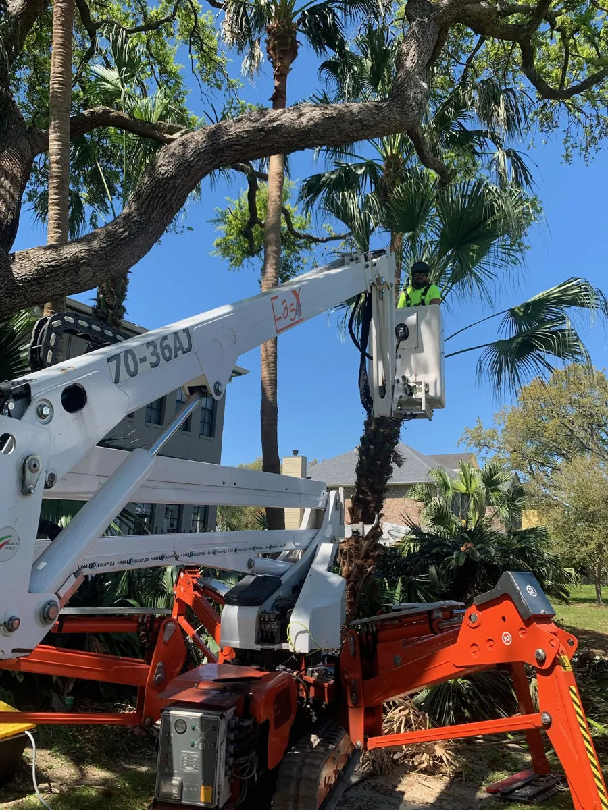
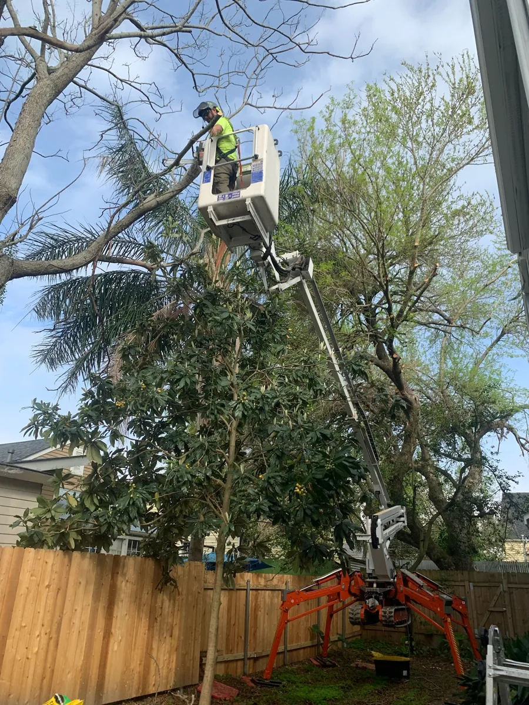
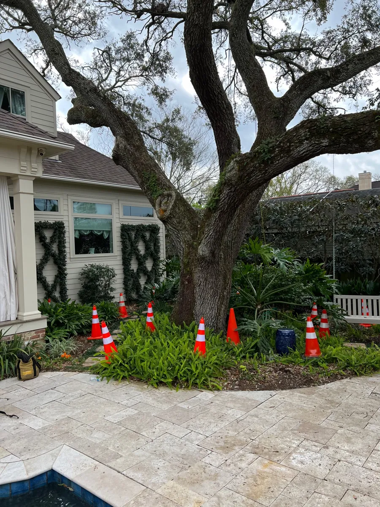
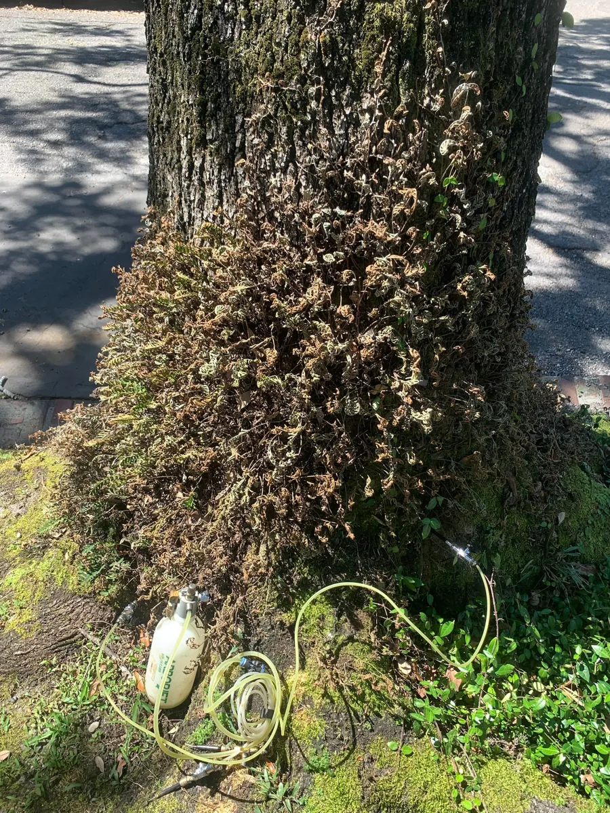

Tree Trimming Service in Greater New Orleans
Pruning by a certified arborist brings out a tree's natural shape and builds sound structure in young trees.
At A Perfect Cut Tree Service, we provide professional tree trimming and pruning services across Greater New Orleans designed to protect your property, preserve valuable trees, and reduce the risk of storm-related damage.
Our team works with homeowners, property managers, HOAs, and commercial properties across New Orleans, Metairie, Kenner, and nearby communities. Our team includes an ISA Certified Arborist, and we use proven, noninvasive techniques.
Urgent or unsafe?Call an Arborist: (504) 732-0779


When Tree Trimming Is Necessary
Most trimming needs aren't emergencies. They're small issues that turn into big ones when they're ignored.
Tree trimming is usually needed when:
- Branches are hanging over roofs, driveways, or sidewalks
- Limbs are growing toward power lines or neighboring properties
- Dead or cracked branches start dropping during wind or rain
- The canopy has become too heavy or uneven
- Trees block light or airflow around the home
Addressing these issues early is usually far less expensive and far less disruptive than waiting until a branch comes down.
Benefits of Tree Trimming and Pruning
- Health: Pruning removes diseased, broken, or dead branches on mature and young trees alike. That takes away habitat for disease-carrying insects and keeps decay fungi from spreading into the rest of the tree. Removing some live branches is occasionally needed to let more sunlight and air into the canopy.
- Structural: Pruning young trees builds good branch architecture and a strong structure. Shaping a tree early lowers the chance of costly problems as your landscape matures.
- Appearance and Restoration: Pruning for appearance and restoration brings out a tree's best shape and helps preserve it.
- Safety: Pruning can help protect against storm damage from high winds, which matters most for trees along walkways, driveways, and around homes and buildings. Trees with low-hanging branches often need pruning to clear foot and vehicle traffic.
- Visual Access: Vista pruning opens views of golf courses, lakes, gardens, or other scenery while keeping privacy where you want it.

Trimming for New Orleans Trees
New Orleans has a high number of mature trees, especially live oaks and older hardwoods. These trees carry a lot of weight, and improper cutting can do more harm than good.
Our trimming approach focuses on:
- Reducing weight without weakening the tree
- Improving airflow through dense canopies
- Removing dead or failing wood before it falls
- Keeping natural structure intact
We avoid over-trimming, topping, or aggressive cuts that shorten a tree’s lifespan.
Why Work With A Perfect Cut Tree Service in Greater New Orleans?
Here's what stands behind our tree trimming work:
- An ISA Certified Arborist (PN-8583A) on staff
- Louisiana Licensed Arborist license #1486
- Calls are answered 24/7, including during storm season
- Based in Metairie and working across Greater New Orleans

Call For Trusted Tree Trimming Services in Greater New Orleans
We trim and shape trees for health and appearance, from small shrubs to tall trees. Contact us today to schedule your tree trimming appointment.
Service Areas
- Tree trimming in New Orleans, LA
- Tree trimming in Metairie, LA
- Tree trimming in Kenner, LA
- Tree trimming in River Ridge, LA
- Tree trimming in Harahan, LA
- Tree trimming in Destrehan, LA
Frequently Asked Questions
How often should trees be trimmed in Louisiana?
It depends on the species, age, and condition of the tree. Mature trees usually need trimming every few years, and younger trees often benefit from more frequent structural pruning while they grow.
Is tree trimming recommended before hurricane season?
Yes. Pre-storm trimming reduces wind resistance and removes weak limbs that are most likely to fail during high winds.
Do I need a permit for tree trimming in New Orleans?
Routine trimming usually doesn't require a permit, but protected trees or work near public property may need approval. Check with your city or parish permit office, and our team can advise based on location and tree type.
Can tree trimming prevent storm damage completely?
Proper trimming lowers the risk but can't eliminate it.
Is tree trimming safe near power lines?
Trimming near utility lines should only be done by trained professionals with proper equipment. This isn't a DIY task.
Will trimming harm my tree?
When it's done correctly, trimming improves tree health. Improper or excessive cutting can cause long-term damage, which is why certified arborist oversight matters.
More on Tree Trimming


See the Work
Footage from our own jobs. Tap the clip to play it; it plays without sound.
Send Photos for an Arborist ReviewWhat to Photograph From a Safe Distance
Photos and video show us the tree, the property around it, how we would reach it, and any visible hazards.


Tree down or a broken limb?
Skip the photos and call. Calls are answered 24/7.
(504) 732-0779Office hours: Monday to Friday 7 AM to 5 PM, Saturday 7 AM to 3 PM, closed Sunday.
Other Tree Care Services

Consulting & Construction Permitting
We help homeowners and contractors work through local tree rules, with advice and permit handling for construction projects that remove or keep trees.
Get My Arborist Review
Tree Preservation
We protect mature and valuable trees with root zone care and pruning, so they stay healthy for the long run.
Get My Arborist Review
Tree Fertilization
Deep-root fertilization puts nutrients in the root zone to keep trees healthy and growing.
Get My Arborist Review
Ready to Show Us Your Tree?
Show us the tree. An arborist reviews what you send. Photos give us a first look. Some trees need an in-person visit before we can make a final recommendation.